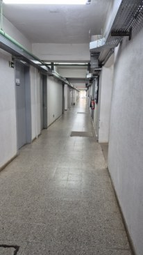
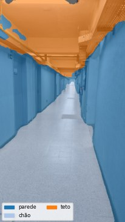
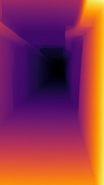
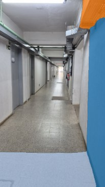

O problema
Uma bengala avisa o que está no chão, mas não diz se a pessoa entrou num corredor ou numa sala, nem que há uma porta aberta ou uma lixeira na altura do quadril. A ideia da pesquisa é uma mochila com câmera e um computador embarcado que descreva o ambiente por voz. Isso impõe uma restrição forte: o modelo precisa ser leve o bastante para rodar sem placa de vídeo, com bateria, em tempo real.
Duas frentes
1. Que tipo de lugar é este?
Para reconhecer a cena, comparo quatro arquiteturas MobileNet (V1, V2, V3 Small e V3 Large), que foram desenhadas para celulares. Cada uma é treinada com três sementes diferentes, para que a comparação considere a variação do próprio treino e não um resultado de sorte. Os experimentos usam bases públicas (MIT67, NYU Depth V2 e SUN RGB-D, com e sem a profundidade) e uma base própria, fotografada nos prédios da UFSM.
Na base própria, um cuidado foi decisivo: fotos tiradas no mesmo minuto e frames do mesmo vídeo ficam sempre na mesma partição. Sem isso, quase-duplicatas iriam para o treino e para o teste ao mesmo tempo, e a acurácia pareceria maior do que é.
2. O que está perto de mim?
A segunda frente não precisa de rótulos nem de treino. Dois modelos já treinados trabalham juntos: o SegFormer separa a imagem em objetos (parede, porta, cadeira, pessoa, chão, escada) e o Depth Anything estima a profundidade relativa. Cruzando os dois, o sistema lista os objetos que estão no terço mais próximo da cena, que são os candidatos a obstáculo.




Um corredor da UFSM passando pelo pipeline. Saída do notebook do repositório.
Leve de verdade
Medi o custo de cada arquitetura, além da acurácia. A MobileNetV3 Small tem 1,5 milhão de parâmetros e leva cerca de 10 ms por imagem em CPU; a MobileNetV1, com 3,2 milhões, leva cerca de 31 ms. Para um aparelho com bateria, essa diferença decide qual modelo é viável.
Para explicar o que o modelo vê
O pipeline também gera mapas Grad-CAM, que mostram em que parte da foto o modelo se apoiou para decidir a cena. Numa tecnologia assistiva, entender por que o modelo errou importa tanto quanto a taxa de acerto.
Próximos passos
- Completar a rotulagem da base da UFSM, que ainda tem classes com poucas fotos.
- Testar a fusão de imagem e profundidade (RGB-D) nos modelos leves.
- Levar o melhor modelo para o hardware embarcado e para a demonstração por voz.
Uma demonstração com comandos de voz está em ohtopico.com.br/teste-mestrado.